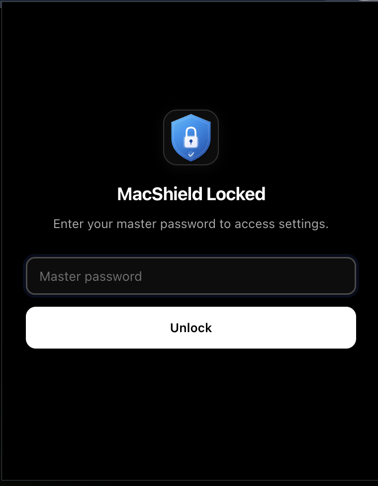

Owner
MacShield is owned and maintained by Vivek W (AryanVBW), with upstream credit preserved for dependencies and foundational projects.
MacShield protects moments when private content becomes accidentally visible: app switches, shared desks, open offices, screen sharing, and browser chats left on display.
The project favors clear controls, transparent permissions, open-source code, and strong defaults over lock-in, subscriptions, analytics, or opaque cloud behavior.

MacShield is owned and maintained by Vivek W (AryanVBW), with upstream credit preserved for dependencies and foundational projects.
The repository is designed to be auditable, forkable, and improvable by the community under applicable license terms.
No in-app analytics, no advertising, no account dependency, and no unnecessary collection of sensitive content.